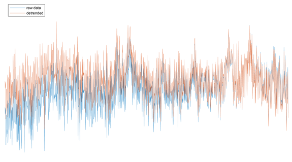

Removes linear trends of image time series.
This function removes linear tends from the time domain of image time series (dimensions Y,X,T) or image time series split by events (dimensions E,Y,X,T) data. In the first case, the linear trend will be calculated from the whole recording whereas in the second, the trends will be calculated for each trial.
This function accepts only image time series (with dimensions Y,X,T) or image time series split by events (with dimensions E,Y,X,T).
The first and last few frames are used to solve for the linear function:
Then, the linear trend is substracted from the data as:
Here is an example showing the the temporal profile of a pixel (in blue) and the linear trend of the signal (in orange):
And here is the comparison between the original data (in blue) and the detrended signal (in orange):
The output of this function is the detrended data with the same dimensions as the input data.